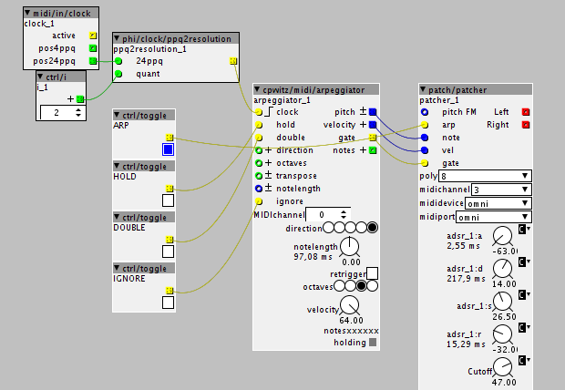

I was wondering if there was a way in making an arpeggiator without splitting the keyboard.
I would like to transform a chord (polyphonic midi input) into a series of monophonic notes.
I can't seem to find a solution with the given objects. Am I just missing something or can't it be done for the moment ?
How do I make an arpeggiator
mtyas
#1
Interesting question.... because the voice allocation is done by the patcher code.
but actually, Id think there are a few ways to do it.
the most 'obvious' but least efficient, I think would be to use a poly voice patch, and then use the voice index to delay the triggering of the envelope. you can pass in parameters to control how this work, e.g. up/down, speed etc.
this is inefficient since although essentially you have a monophonic voice e.g. you are using resources for multiple voices.
to do something more efficient...
im not sure, if you have a monophonic patch, if you get the overlapping note on/off, I suspect you would*, so in this case you would need to store (in a table) currently active notes, and then loop around them.
(* if not, then you would have to intercept the midi messages, possible, but a little more involved)
something to bare in mind, on this however is 'release tails', if these overlap then the polyphonic approach is best, as you need separate voices anyway.
johannes
#3
Inside a polyphonic subpatch you could generate internal note events with midi/intern/note. And catch these with another polyphonic subpatch for synthesis. But I have not tried this...
mtyas
#4
Thanks for the answers. I'll be looking into this now I have a few more clues.
I don't quite get what the "polyindex" object does yet, nor the "polyindex_sub" subobject, but I promise to try out all possibilities before coming back here, asking for a simple example because I'm too stupid to understand (which is most likely, but I must advance a bit more before admitting it once for all).
johannes
#5
A polyphonic subpatch with n voices runs the subpatch n times, and routes incoming note events to the least recently used voice subpatch. patch/polyindex outputs the index number of the voice in each subpatch, and does not change while running.
patch/subpatch_polyindex_sub shouldn't have been in the object library, it was part of a test, will remove it.
clonet
#6
My 2 cents.
Far from being complete, far from being useful, but maybe a starting point.
Cheers from Rome 

DrKoma
#9
check @cpwitz object for this !
I got a synced arpeggiator now and some logic to bypass the midi notes in , in the subpatcher when using the arpeggiator and feed the notes from outside coming from the arp instead

 ?
?{kind=link}
Mindsetup
#11
How could i create clockdivider to control the arp speed with midi buttons? Two buttons: one to add more speed one to slow down the arp. Im using cpwitz arpeggiator.
Thanks in advance:)